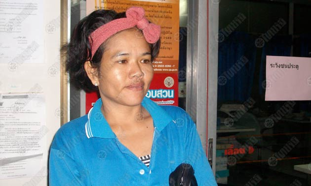

» Home
» Isaan Dialect - Introduction to the dialect spoken by approximately 1/3 of Thailand's people.
» Thai Particles - Explanation of Thai language particles with examples.
» Loi Gratong Festival - Thailand's magical floating basket festival.
» Same Same - Why do Thais say same same instead of just same?
» Space Invaders - Play Space Invaders game online in your browser using Flash plugin - SANUK MAHK!
» Thai Videos - Traditional Thai dancing videos.
» Thai News Stories - English translations of Thai news stories.
» Visitors' Guestbook - Leave a comment.
Wife at End of her Tether - Abusive Phonecalls from Mistress - Shoots Husband Dead in Rage

A Singburi woman boiling with anger. Continually receiving abusive phonecalls from her husband's mistress. The final one coming during their meal leads to an argument. Flies into a rage and gets a .22 handgun from the wardrobe. Returns and shoots her husband dead in the head. Anger vented she gives herself up to police.
At ten past midnight on 18 May 2011 police captain Sawaeng Sanumeun, investigating officer at Singburi police station received a report of a shooting at house no 62/87, village 6 in Phogran District, so he rushed to the scene with the Singburi rescue services. The scene of the shooting was a single story house, the floor of which was covered in a pool of blood and there were plates and a bottle on the floor.
Friends had already taken the inured party to Singburi hospital where he later died.
The dead man was named as Mr Mana Yeeowya, 44, who was the younger brother of Sen Yeeowya, squad leader of the traffic police at Singburi police station. The victim had been shot with a .22 handgun to the left side of the head near the ear, the single shot remaining embedded in the head. He died on the way to the hospital.
Mr Mana Yeeowya had been shot by his wife, Mrs Tamonwan Munara, 37, who was waiting at the scene to give herself up to police.
Mrs Tamonwan stated that her husband worked at a paper factory near their house. During their time here, her husband had availed himself of a mistress who regularly made abusive phonecalls to her. Before the shooting she was having dinner with her husband at their house when the mistress made another abusive phonecall which led to an argument with her husband.
She flew into a rage, got up, walked to the wardrobe, picked up the handgun on top of it, returning to her husband to shoot him dead. She was taken into custody pending prosecution.